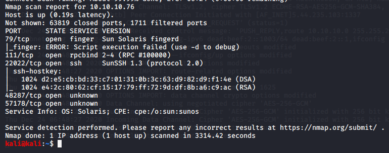

nmap scan done


created a usernames.txt file

this was taking a very long time since number of name in file was 86k
so aquired a smaller list from
https://github.com/danielmiessler/SecLists/blob/master/Usernames/Names/names.txt

this was taking a long time so for experimental purpose just extracted all names starting with letter ''s"

logged in with sunny password guessed as sunday


went into the backup folder


thus cracked it successfully
now login using sammy


other way is like following